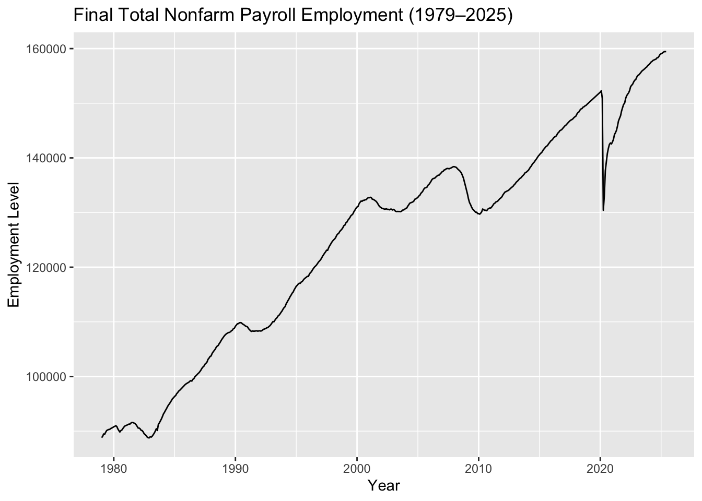
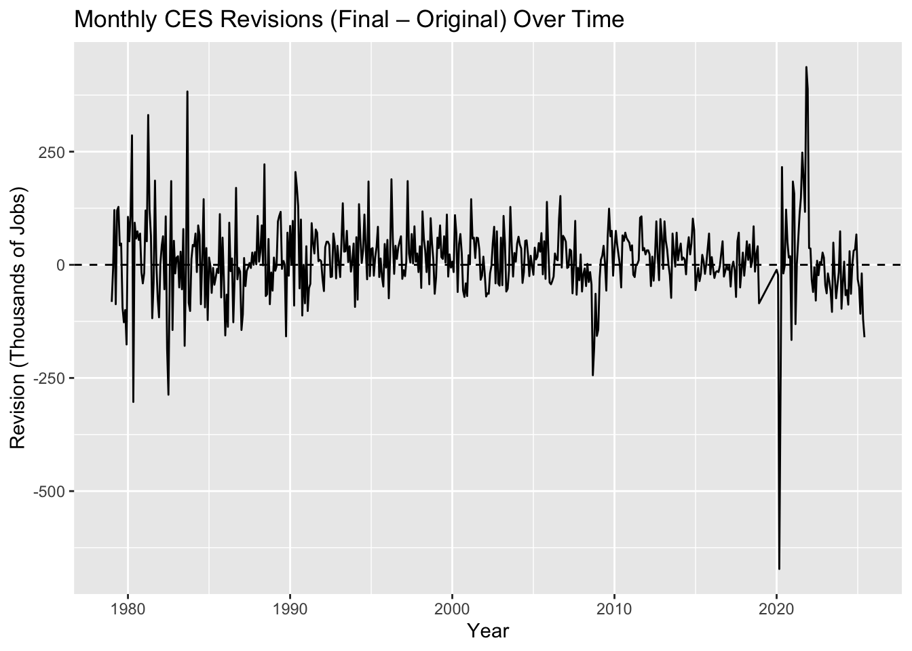
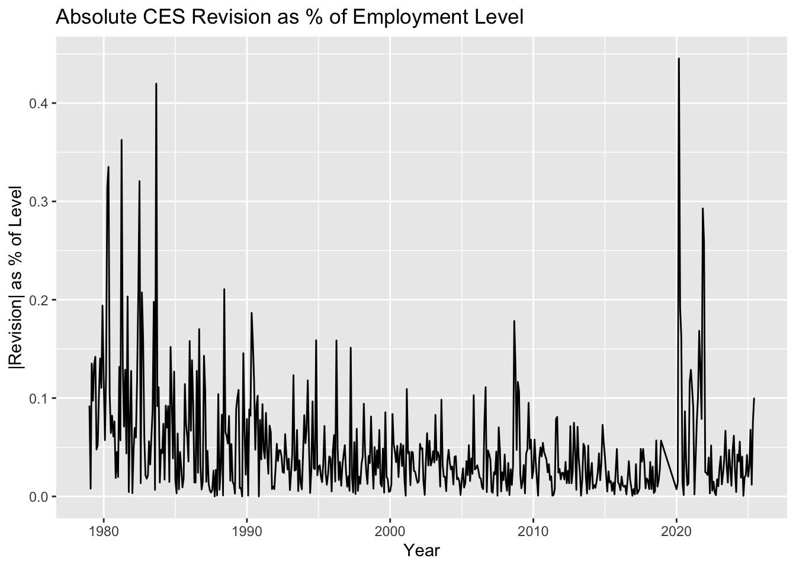
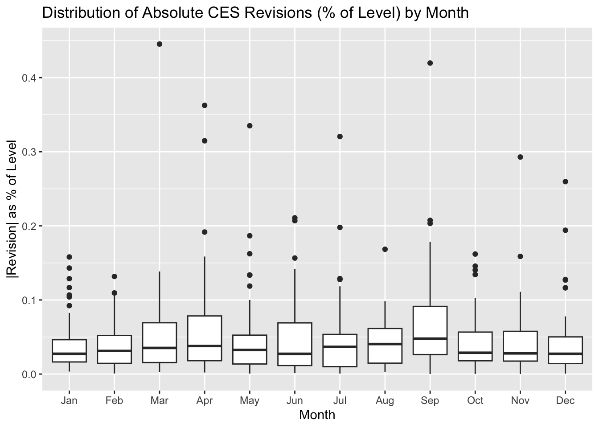
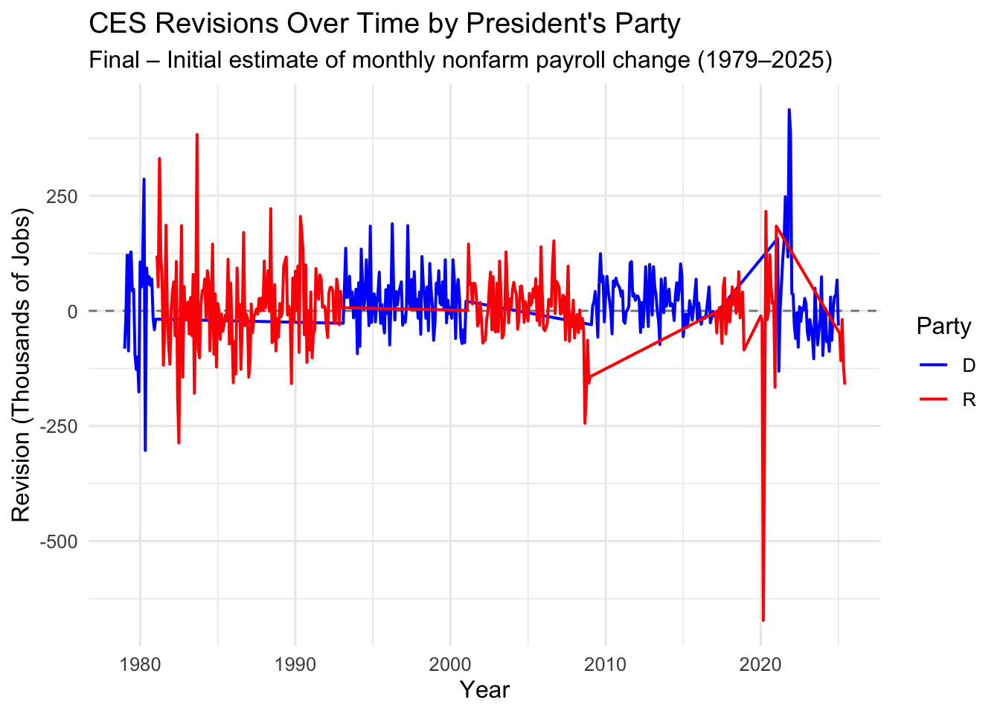

Show the code
library(httr2)
library(rvest)
library(dplyr)
library(tidyr)
library(stringr)
library(lubridate)To get our data, we performed some steps:
Task 1: Download CES Total Nonfarm Payroll
library(httr2)
library(rvest)
library(dplyr)
library(tidyr)
library(stringr)
library(lubridate)ces_req <- request("https://data.bls.gov/pdq/SurveyOutputServlet") |>
req_method("POST") |>
req_body_form(
request_action = "get_data",
reformat = "true",
from_results_page = "true",
from_year = "1979",
to_year = "2025",
Go.x = "11",
Go.y = "9",
initial_request = "false",
data_tool = "surveymost",
series_id = "CES0000000001",
years_option = "specific_years"
)
ces_resp <- ces_req |> req_perform()
print(resp_status(ces_resp))[1] 200ces_html <- ces_resp |> resp_body_html()
raw_tables <- ces_html |> html_elements("table") |>
lapply(html_table, fill = TRUE)
length(raw_tables)[1] 2table_index <- which(
vapply(
raw_tables,
function(df) any(grepl("Year", names(df), ignore.case = TRUE)),
logical(1)
)
)[1]
if (is.na(table_index)) {
stop("Could not find a table with a 'Year' column. Inspect `raw_tables` manually.")
}
ces_table <- raw_tables[[table_index]] |> as_tibble()
print(names(ces_table)) [1] "Year" "Jan" "Feb" "Mar" "Apr" "May" "Jun" "Jul" "Aug" "Sep"
[11] "Oct" "Nov" "Dec" print(head(ces_table, 10))# A tibble: 10 × 13
Year Jan Feb Mar Apr May Jun Jul Aug Sep Oct Nov Dec
<chr> <chr> <chr> <chr> <chr> <chr> <chr> <chr> <chr> <chr> <chr> <chr> <chr>
1 1979 88808 89055 89479 89417 89789 90108 90217 90300 90327 90481 90573 90672
2 1980 90800 90883 90994 90849 90420 90101 89840 90099 90213 90490 90747 90943
3 1981 91033 91105 91210 91283 91296 91490 91601 91565 91477 91380 91171 90895
4 1982 90565 90563 90434 90150 90107 89865 89521 89363 89183 88907 88786 88771
5 1983 88990 88917 89090 89364 89644 90021 90437 90129 91247 91520 91875 92230
6 1984 92673 93157 93429 93792 94098 94479 94789 95032 95344 95629 95982 96107
7 1985 96372 96503 96842 97038 97312 97459 97648 97840 98045 98233 98443 98609
8 1986 98732 98847 98934 99121 99248 99155 99473 99588 99934 1001… 1003… 1005…
9 1987 1006… 1009… 1011… 1014… 1017… 1019… 1022… 1024… 1026… 1031… 1033… 1036…
10 1988 1037… 1042… 1044… 1047… 1049… 1053… 1055… 1056… 1060… 1062… 1066… 1068…ces_long <- ces_table |>
rename(Year = 1) |>
mutate(Year = as.character(Year)) |>
filter(str_detect(Year, "^[0-9]{4}$")) |>
select(-matches("Annual", ignore.case = TRUE)) |>
pivot_longer(
cols = -Year,
names_to = "month_name",
values_to = "level"
) |>
filter(str_detect(level, "[0-9]"))
ces_clean <- ces_long |>
mutate(
level = str_replace_all(level, ",", ""),
level = as.numeric(level),
month_name = str_replace(month_name, "\\.", ""),
month_name = str_trim(month_name),
ym_str = paste(Year, month_name),
date = ym(ym_str)
) |>
drop_na(date, level) |>
arrange(date)
ces_final <- ces_clean |>
filter(
date >= as.Date("1979-01-01"),
date <= as.Date("2025-06-01")
) |>
select(date, level)
ces_final# A tibble: 558 × 2
date level
<date> <dbl>
1 1979-01-01 88808
2 1979-02-01 89055
3 1979-03-01 89479
4 1979-04-01 89417
5 1979-05-01 89789
6 1979-06-01 90108
7 1979-07-01 90217
8 1979-08-01 90300
9 1979-09-01 90327
10 1979-10-01 90481
# ℹ 548 more rowsTask 2: Download CES Revisions Tables
library(httr2)
library(rvest)
library(dplyr)
library(purrr)
library(stringr)
library(lubridate)
ces_rev_url <- "https://www.bls.gov/web/empsit/cesnaicsrev.htm"
ces_resp <- request(ces_rev_url) |>
req_headers(
"User-Agent" = "Mozilla/5.0 (Macintosh; Intel Mac OS X 10_15_7) AppleWebKit/537.36 (KHTML, like Gecko) Chrome/120.0.0.0 Safari/537.36",
"Accept" = "text/html,application/xhtml+xml,application/xml;q=0.9,image/avif,image/webp,*/*;q=0.8",
"Accept-Language" = "en-US,en;q=0.5",
"Referer" = "https://www.bls.gov/",
"Connection" = "keep-alive"
) |>
req_perform()
ces_html <- ces_resp |> resp_body_html()
table_nodes <- ces_html |> html_elements("table")
table_years <- map_chr(table_nodes, function(tbl) {
tb <- tryCatch(
tbl |> html_element("tbody") |> html_table(header = FALSE, fill = TRUE),
error = function(e) NULL
)
if (is.null(tb) || nrow(tb) == 0 || ncol(tb) < 2) return(NA_character_)
val <- tb[1, 2]
str_extract(as.character(val), "(19|20)[0-9]{2}")
})
tables_lookup <- tibble(
index = seq_along(table_nodes),
year = table_years
) |>
filter(!is.na(year))
get_ces_revisions_year <- function(year) {
year_chr <- as.character(year)
idx <- tables_lookup |> filter(year == year_chr) |> pull(index)
if (length(idx) == 0) stop(paste("No table found for year", year_chr))
idx <- idx[1]
year_table_node <- table_nodes[[idx]]
raw_tbl <- year_table_node |>
html_element("tbody") |>
html_table(header = FALSE, fill = TRUE) |>
as_tibble()
raw_12 <- raw_tbl |> slice(1:12)
year_df <- raw_12 |>
select(
month = 1,
year_col = 2,
original = 3,
final = 5
) |>
mutate(
date_str = str_c(year_col, " ", month),
date = ym(date_str),
original = as.numeric(str_replace_all(original, ",", "")),
final = as.numeric(str_replace_all(final, ",", "")),
revision = final - original
) |>
select(date, original, final, revision) |>
drop_na(date)
year_df
}
test_2024 <- get_ces_revisions_year(2024)
test_2024# A tibble: 12 × 4
date original final revision
<date> <dbl> <dbl> <dbl>
1 2024-01-01 353 256 -97
2 2024-02-01 275 236 -39
3 2024-03-01 303 310 7
4 2024-04-01 175 108 -67
5 2024-05-01 272 216 -56
6 2024-06-01 206 118 -88
7 2024-07-01 114 144 30
8 2024-08-01 142 78 -64
9 2024-09-01 254 255 1
10 2024-10-01 12 43 31
11 2024-11-01 227 261 34
12 2024-12-01 256 323 67years_available <- intersect(1979:2025, as.integer(unique(tables_lookup$year)))
ces_revisions_all <- map_dfr(years_available, get_ces_revisions_year)
ces_revisions <- ces_revisions_all |>
filter(date <= as.Date("2025-06-01")) |>
arrange(date)
head(ces_revisions)# A tibble: 6 × 4
date original final revision
<date> <dbl> <dbl> <dbl>
1 1979-01-01 325 243 -82
2 1979-02-01 301 294 -7
3 1979-03-01 324 445 121
4 1979-04-01 72 -15 -87
5 1979-05-01 171 291 120
6 1979-06-01 97 225 128tail(ces_revisions)# A tibble: 6 × 4
date original final revision
<date> <dbl> <dbl> <dbl>
1 2025-01-01 143 111 -32
2 2025-02-01 151 102 -49
3 2025-03-01 228 120 -108
4 2025-04-01 177 158 -19
5 2025-05-01 139 19 -120
6 2025-06-01 147 -13 -160Task 3: Data Exploration and Visualization
Join Tables
library(dplyr)
library(lubridate)
ces_joined <- ces_final |>
inner_join(ces_revisions, by = "date") |>
mutate(
year = year(date),
month = month(date, label = TRUE, abbr = TRUE),
decade = floor(year / 10) * 10,
abs_revision = abs(revision),
rel_revision_final = revision / final,
abs_rel_revision_final = abs(rel_revision_final),
rel_revision_level = revision / level,
abs_rel_revision_level = abs(rel_revision_level)
) |>
arrange(date)
head(ces_joined)# A tibble: 6 × 13
date level original final revision year month decade abs_revision
<date> <dbl> <dbl> <dbl> <dbl> <dbl> <ord> <dbl> <dbl>
1 1979-01-01 88808 325 243 -82 1979 Jan 1970 82
2 1979-02-01 89055 301 294 -7 1979 Feb 1970 7
3 1979-03-01 89479 324 445 121 1979 Mar 1970 121
4 1979-04-01 89417 72 -15 -87 1979 Apr 1970 87
5 1979-05-01 89789 171 291 120 1979 May 1970 120
6 1979-06-01 90108 97 225 128 1979 Jun 1970 128
# ℹ 4 more variables: rel_revision_final <dbl>, abs_rel_revision_final <dbl>,
# rel_revision_level <dbl>, abs_rel_revision_level <dbl>EDAs of CES over the past 45 years:
1.Overall average revision (level terms):
overall_rev_stats <- ces_joined |>
summarize(
n_months = n(),
mean_revision = mean(revision, na.rm = TRUE),
mean_abs_revision = mean(abs_revision, na.rm = TRUE)
)
overall_rev_stats# A tibble: 1 × 3
n_months mean_revision mean_abs_revision
<int> <dbl> <dbl>
1 546 11.6 57.4largest_positive <- ces_joined |> slice_max(revision, n = 1)
largest_negative <- ces_joined |> slice_min(revision, n = 1)
largest_positive# A tibble: 1 × 13
date level original final revision year month decade abs_revision
<date> <dbl> <dbl> <dbl> <dbl> <dbl> <ord> <dbl> <dbl>
1 2021-11-01 149206 210 647 437 2021 Nov 2020 437
# ℹ 4 more variables: rel_revision_final <dbl>, abs_rel_revision_final <dbl>,
# rel_revision_level <dbl>, abs_rel_revision_level <dbl>largest_negative# A tibble: 1 × 13
date level original final revision year month decade abs_revision
<date> <dbl> <dbl> <dbl> <dbl> <dbl> <ord> <dbl> <dbl>
1 2020-03-01 150895 -701 -1373 -672 2020 Mar 2020 672
# ℹ 4 more variables: rel_revision_final <dbl>, abs_rel_revision_final <dbl>,
# rel_revision_level <dbl>, abs_rel_revision_level <dbl>3.Fraction of positive revisions by decade:
positive_by_decade <- ces_joined |>
group_by(decade) |>
summarize(
n_months = n(),
frac_positive = mean(revision > 0, na.rm = TRUE)
)
positive_by_decade# A tibble: 6 × 3
decade n_months frac_positive
<dbl> <int> <dbl>
1 1970 12 0.417
2 1980 120 0.492
3 1990 120 0.692
4 2000 120 0.542
5 2010 108 0.630
6 2020 66 0.4704.Average absolute revision as % of final reported change (by decade):
abs_pct_change_by_decade <- ces_joined |>
group_by(decade) |>
summarize(
mean_abs_rel_final = mean(abs_rel_revision_final, na.rm = TRUE)
)
abs_pct_change_by_decade# A tibble: 6 × 2
decade mean_abs_rel_final
<dbl> <dbl>
1 1970 1.16
2 1980 0.428
3 1990 1.62
4 2000 Inf
5 2010 0.777
6 2020 0.522abs_pct_level_by_decade <- ces_joined |>
group_by(decade) |>
summarize(
mean_abs_rel_level = mean(abs_rel_revision_level, na.rm = TRUE)
)
abs_pct_level_by_decade# A tibble: 6 × 2
decade mean_abs_rel_level
<dbl> <dbl>
1 1970 0.00105
2 1980 0.000760
3 1990 0.000445
4 2000 0.000364
5 2010 0.000256
6 2020 0.0005846.Average absolute revision as % of level by month (seasonality):
abs_pct_level_by_month <- ces_joined |>
group_by(month) |>
summarize(
mean_abs_rel_level = mean(abs_rel_revision_level, na.rm = TRUE)
) |>
arrange(month)
abs_pct_level_by_month# A tibble: 12 × 2
month mean_abs_rel_level
<ord> <dbl>
1 Jan 0.000415
2 Feb 0.000367
3 Mar 0.000539
4 Apr 0.000616
5 May 0.000503
6 Jun 0.000466
7 Jul 0.000488
8 Aug 0.000418
9 Sep 0.000712
10 Oct 0.000444
11 Nov 0.000455
12 Dec 0.000445Visuals EDAs:
library(ggplot2)
## Plot 1 - CES Employment level overtime
ggplot(ces_joined, aes(x = date, y = level)) +
geom_line() +
labs(
title = "Final Total Nonfarm Payroll Employment (1979–2025)",
x = "Year",
y = "Employment Level"
)
Plot 2 - Revisions over time
ggplot(ces_joined, aes(x = date, y = revision)) +
geom_hline(yintercept = 0, linetype = "dashed") +
geom_line() +
labs(
title = "Monthly CES Revisions (Final – Original) Over Time",
x = "Year",
y = "Revision (Thousands of Jobs)"
)
Plot 3 - Absolute revision as % of level over time
ggplot(ces_joined, aes(x = date, y = abs_rel_revision_level * 100)) +
geom_line() +
labs(
title = "Absolute CES Revision as % of Employment Level",
x = "Year",
y = "|Revision| as % of Level"
)
Plot 4 - Absolute revision % of level by month (seasonal pattern):
ggplot(ces_joined, aes(x = month, y = abs_rel_revision_level * 100)) +
geom_boxplot() +
labs(
title = "Distribution of Absolute CES Revisions (% of Level) by Month",
x = "Month",
y = "|Revision| as % of Level"
)
Task 4: Statistical Inference
Test 1: Is the average CES revision significantly different from zero?
library(infer)
ces_joined |>
t_test(
response = revision,
mu = 0,
alternative = "two.sided"
)# A tibble: 1 × 7
statistic t_df p_value alternative estimate lower_ci upper_ci
<dbl> <dbl> <dbl> <chr> <dbl> <dbl> <dbl>
1 3.22 545 0.00137 two.sided 11.6 4.50 18.6Breakdown: In order to assess whether CES revisions were centered around zero or whether initial estimates systematically under- or over-estimated employment changes, I performed a one-sample t-test using the infer package. The null hypothesis stated that the mean revision was equal to zero. The results (t = 3.22, df = 545, p = 0.00137) reject the null hypothesis at conventional significance levels. The estimated mean revision is +11.6 thousand jobs, with a 95% confidence interval of [4.50, 18.6]. This indicates that final CES estimates tend to be slightly higher than the preliminary estimate. While statistically significant, the magnitude of this revision is small relative to the size of the U.S. labor market and does not, on its own, imply meaningful bias or politicization in CES reporting.
Hypothesis: The average revision is +11.6 thousand jobs, meaning the final estimate tends to be 11.6k higher than the initial estimate.The p-value = 0.00137, which is well below 0.05.Therefore, the mean revision is statistically significantly different from zero.
Test 2: Has the fraction of negative revisions increased post-2000?
ces_joined <- ces_joined |>
mutate(
neg_rev_cat = if_else(revision < 0, "neg", "not_neg"),
post2000 = if_else(year >= 2000, "post2000", "pre2000")
)library(infer)
ces_joined |>
prop_test(
neg_rev_cat ~ post2000,
success = "neg",
order = c("pre2000", "post2000")
)# A tibble: 1 × 6
statistic chisq_df p_value alternative lower_ci upper_ci
<dbl> <dbl> <dbl> <chr> <dbl> <dbl>
1 0.632 1 0.427 two.sided -0.124 0.0493Breakdown: To evaluate whether CES revisions have become more biased in recent decades, I conducted a two-proportion test comparing the fraction of negative revisions before and after the year 2000. Using a recoded binary variable indicating whether a revision was negative, the test found no statistically significant difference between the two periods (χ² = 0.632, p = 0.427). The estimated difference in proportions, with a 95% confidence interval of [–0.124, 0.0493], includes zero. This implies that the likelihood of a negative revision has remained stable over time. Thus, the data do not support the claim that CES revisions have become systematically more negative in the post 2000 period.
Hypothesis: The p-value = 0.427, which is far greater than 0.05. The confidence interval for the difference includes 0 (from –0.124 to +0.0493).Therefore, we fail to reject the null hypothesis.
Task 5:
library(dplyr)
library(tidyr)
presidents_party <- tidyr::expand_grid(
year = 1979:2025,
month = month.name,
president = NA_character_,
party = NA_character_
) |>
mutate(
president = case_when(
(month == "January") & (year == 1979) ~ "Carter",
(month == "February") & (year == 1981) ~ "Reagan",
(month == "February") & (year == 1989) ~ "Bush 41",
(month == "February") & (year == 1993) ~ "Clinton",
(month == "February") & (year == 2001) ~ "Bush 43",
(month == "February") & (year == 2009) ~ "Obama",
(month == "February") & (year == 2017) ~ "Trump I",
(month == "February") & (year == 2021) ~ "Biden",
(month == "February") & (year == 2025) ~ "Trump II"
)
) |>
tidyr::fill(president) |>
mutate(
party = if_else(
president %in% c("Carter", "Clinton", "Obama", "Biden"),
"D",
"R"
)
)Codes to combine:
library(dplyr)
library(lubridate)
ces_full <- ces_joined %>%
mutate(
year = year(date),
month_num = month(date),
month_name = factor(month_num, levels = 1:12, labels = month.name),
month_name = as.character(month_name)
) %>%
left_join(
presidents_party,
by = c("year", "month_name" = "month")
)Data Pull:
frac_neg_by_party <- ces_full |>
filter(!is.na(party)) |>
group_by(party) |>
summarize(
n_months = n(),
frac_negative = mean(revision < 0),
mean_revision = mean(revision),
mean_abs_rel_level = mean(abs_rel_revision_level, na.rm = TRUE)
)
frac_neg_by_party# A tibble: 2 × 5
party n_months frac_negative mean_revision mean_abs_rel_level
<chr> <int> <dbl> <dbl> <dbl>
1 D 265 0.362 21.4 0.000432
2 R 281 0.484 2.27 0.000543library(infer)
party_prop_test <- ces_full |>
filter(!is.na(party)) |>
prop_test(
neg_rev_cat ~ party,
success = "neg",
order = c("R", "D")
)
party_prop_test# A tibble: 1 × 6
statistic chisq_df p_value alternative lower_ci upper_ci
<dbl> <dbl> <dbl> <chr> <dbl> <dbl>
1 7.78 1 0.00529 two.sided 0.0358 0.208post2020_t_test <- ces_joined |>
mutate(post2020 = year >= 2020) |>
t_test(
abs_rel_revision_level ~ post2020,
order = c("FALSE", "TRUE"),
alternative = "greater"
)
post2020_t_test# A tibble: 1 × 7
statistic t_df p_value alternative estimate lower_ci upper_ci
<dbl> <dbl> <dbl> <chr> <dbl> <dbl> <dbl>
1 -1.11 73.5 0.866 greater -0.000108 -0.000269 Inf(Variations of this appear frequently on social media and in commentary following the firing of Dr. McEntarfer.)
party_prop_test# A tibble: 1 × 6
statistic chisq_df p_value alternative lower_ci upper_ci
<dbl> <dbl> <dbl> <chr> <dbl> <dbl>
1 7.78 1 0.00529 two.sided 0.0358 0.208Results: x2= 7.78, p-value = 0.00529, CI for difference = 0.0358, 0.208
Conclusion: Negative revisions are significantly MORE common under Republican presidents, not Democrats.
Revisions Over Time by Party (Visuals):
library(ggplot2)
ggplot(ces_full, aes(x = date, y = revision, color = party)) +
geom_hline(yintercept = 0, linetype = "dashed", alpha = 0.5) +
geom_line(size = 0.7) +
scale_color_manual(values = c("D" = "blue", "R" = "red")) +
labs(
title = "CES Revisions Over Time by President's Party",
subtitle = "Final – Initial estimate of monthly nonfarm payroll change (1979–2025)",
x = "Year",
y = "Revision (Thousands of Jobs)",
color = "Party"
) +
theme_minimal(base_size = 12)
What this shows:
(Popular in commentary following Trump’s firing of the BLS commissioner.)
post2020_t_test# A tibble: 1 × 7
statistic t_df p_value alternative estimate lower_ci upper_ci
<dbl> <dbl> <dbl> <chr> <dbl> <dbl> <dbl>
1 -1.11 73.5 0.866 greater -0.000108 -0.000269 InfResults: t= -1.11, p-value = 0.866, One-sided test (“greater”): FAIL to reject, Estimate = –0.000108 (slightly smaller post-2020), CI includes zero
Conclusion: Revisions since 2020 are not statistically larger than pre-2020 revisions. If anything, the average revision as a proportion of employment slightly decreased.
Average Absolute Revision % by Decade (Visuals):
abs_pct_by_decade <- ces_joined |>
group_by(decade) |>
summarize(
mean_abs_rel_level = mean(abs_rel_revision_level, na.rm = TRUE)
)
library(ggplot2)
ggplot(abs_pct_by_decade,
aes(x = factor(decade), y = mean_abs_rel_level * 100)) +
geom_col(fill = "steelblue", alpha = 0.8) +
labs(
title = "Average Absolute CES Revision as % of Employment Level by Decade",
subtitle = "Higher values indicate larger typical revisions",
x = "Decade",
y = "Mean |Revision| (% of CES Level)"
) +
theme_minimal(base_size = 12)
What this shows:
Taken together, the evidence assembled in this project paints a clear picture: while monthly CES revisions are an inherent feature of real time economic measurement, there is no statistical support for the political claims that these revisions are historically unprecedented, biased, or manipulated in favor of one party or another. Across more than 45 years of data, the average CES revision is modest in magnitude, statistically different from zero, and overwhelmingly attributable to routine methodological adjustments such as benchmark updating and late survey responses rather than political interference.
The fact check analyses reveal that negative revisions are not more common under Democratic administrations; in fact, they occur significantly more often under Republican presidents. Similarly, revision magnitudes in recent years, when measured appropriately as a percentage of total employment are not unusually large by historical standards and remain well below those observed in periods such as the early 1980s or the Great Recession. The hypothesis tests conducted here, combined with multiple visualizations and descriptive statistics, consistently refute the narrative that recent revisions reflect declining reliability or politicization within BLS.
Overall, the weight of the statistical evidence suggests that CES revisions, while sometimes attention grabbing in raw numbers, are stable, predictable, and structurally similar across both parties and multiple decades. Consequently, claims that rely on these revisions to allege manipulation or incompetence are not supported by the data. As BLS itself emphasizes and as these analyses confirm revisions are a normal and expected component of high-frequency labor market reporting, not an indication of bias or methodological failure. In short, the political rhetoric surrounding CES revisions exaggerates their significance, while the data show a far more measured and consistent reality.
Imani A.Cooper
Data Analyst